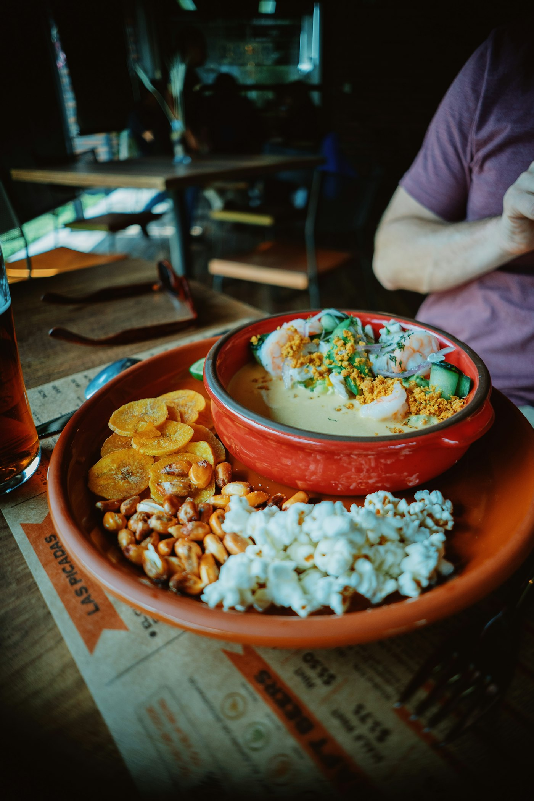

Comida de casa, en el centro de Cuenca.
Locro, seco de chivo y mote pillo hechos cada mañana, como en la mesa de la abuela. Almuerzo del día y carta de martes a domingo.
El almuerzo de hoy
$4,50- SopaLocro de papa con queso y aguacate
- SegundoSeco de pollo con arroz y maduro
- JugoTomate de árbol
Cambia cada día. Lo publicamos a las 10:00.
